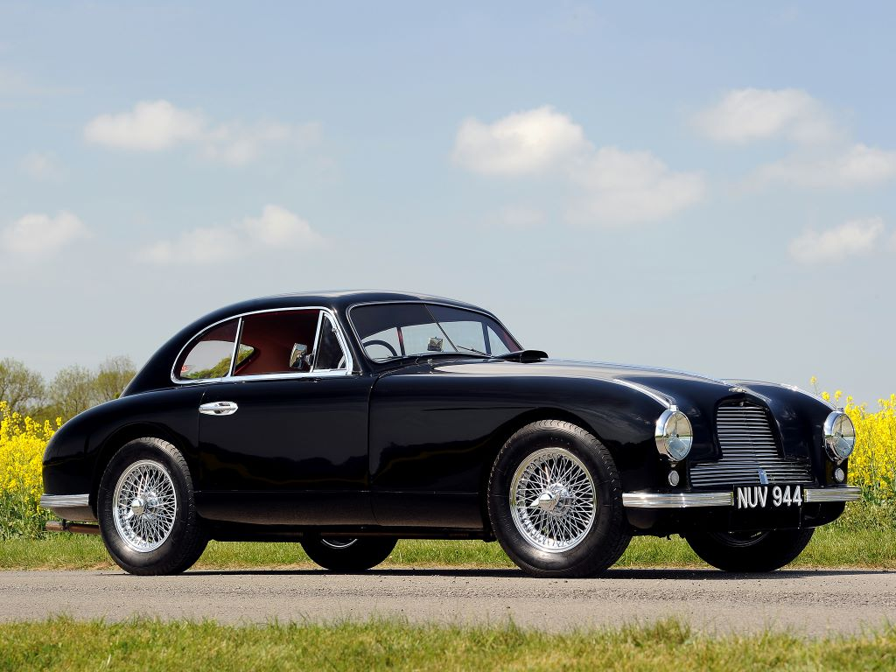

Aston Martin DB2 (1950-1953)

Страна: Великобритания. Двухместное купе Aston Martin DB2 выпускался с 1950 по 1953 годы. Всего было выпущено 411 экземпляров, 102 из которых имеют кузов кабриолет. Первые 49 образцов имели квадратную радиаторную решетку, которую позже заменили на решетку округленную формы. Автомобиль был построен на базе модели DB1 и оснащался мотором объемом 2580 см3. Тип двигателя рядный 6-цилиндровый. Максимальная мощность 105 л.с. при 5000 об/мин. Максимальный крутящий момент 169 Нм при 3100 об/мин. Максимальная скорость машины — 177 км/ч. Стоимость автомобиля составляла 1914 фунтов.